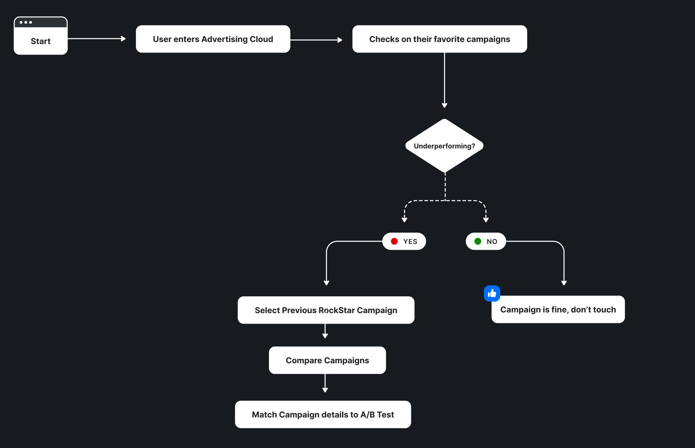
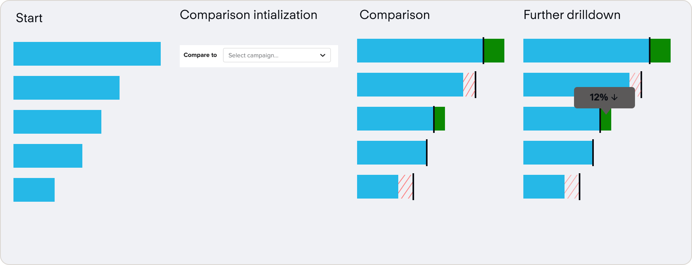

Powering marketing decision makers to accurately benchmark their advertising campaigns.

Demandbase
Q3 2021
Product Designer, Researcher
Sketch, Usertesting.com, Invision
When users encounter information without enough context, they often rely on guesswork to make sense of it.
This uncertainty was the gap I set out to address in Q3 2021, leading the design of a feature that gave users clearer guidance and made platform data easier to interpret. The work began with a piece of user feedback:

Understand why marketing practictioners are reporting low NPS scores on advertising.
NPS was a key driver in Demandbase's strategy as an account based marketing company.
Ties into overarching OKR of Usability, which we needed to tie our projects to in order to get prioritized
Tying my work to OKR's early on proved helpful as it was easy to advocate for when consulting with leadership.
Our persona needed a way to see their ad campaigns in a digestible summary that was easy to understand and actionable.
To better investigate our problem, we had to consult with our personas, and understand our user deeply. As you can see, she often struggles with understanding the information, and needs a new way to consume this information. To be able to solve her problem, we need to be able to create an effective problem statement.

Digital Marketers who launch Ad Campaigns need a clear and concise way to consume the information that is displayed to them within the Advertising Cloud Product in Demandbase One.
make the data presented to the user more contextual, and easier to understand?
Creating a map of a customers's critical user journeys helped me prioritize and empathize with existing flows.
First, I empathize with the user by creating a map of what they do, what possible gaps exist in their workflow and what this might really mean.
Users need more guidance on how to action on what they are seeing.
From this, I identified one of the core issues, the user is not able to understand what the metrics mean due to the abstract nature of how the numbers are presented.

Comparisons, or benchmarks, contextualize information for users.
The user will see info like the number shown above under impressions, but they don’t really know what it means.
How can we fix this?
My hypothesis to this: Comparisons
Humans are constantly comparing new sensory information to a point of reference that we already understand. We can adopt this mental model into the products that we create to take an advantage of this.
Now we have to figure out what to compare, with the core metrics being listed in advertising below:

From these, we can narrow down the type of comparisons possible to one core type, Targeting. The main campaigns summary card delivers cumulative information for bulk selected campaigns, and we could use these metrics to compare one campaign to another, using a benchmark.
To determine a direction for visualizing this comparison, I needed to scan the advertising product to see which patterns were in use.

Summarizing this, I needed the following to get started
These high level needs helped to scaffold my thinking when ideating on a potential design.

We needed an intuitive point of entry into the feature.
Once I had figured out where I could place the comparison, I needed a unit of analysis, and a point of entry into visualizing this comparison. For this, I chose the single campaign screen, which is found by drilling down one level through the main advertising page.

Our user flows helped us to understand what the golden workflows are, and how to integrate this into the existing IA of the product.
We can document this using a critical user journey for how they might flow into this comparison.
Now that we knew where it would live, I needed a pattern to show the comparison.
Documenting the flow itself, we can initiate with the following pattern.
From here, we took this concept to user testing, with internal power users of the product.
To validate the concept and the basic patterns being used, I constructed a barebones prototype and started looking for participants.

I moved towards testing this pattern with a group of internal users, varying in expertise with the product. (N=7). This was done with a UX Researcher through moderated sessions on zoom, and recorded in dovetail. Some of the key insights, as extracted from testing:


The one bar approach might save visual space, but isn't effective in conveying the comparison.
Since testing showed that the concept was valid, but the presentation of the overlapped bar approach was confusing, I decided to iterate on this with a 2 bar approach.
This led me back to the drawing board where I took in some of the feedback given, and synthesized it with previous research. One option that I had explored earlier, but didn’t pursue fully was a 2 bar approach.

The new design would use the same vertical space, but make it much clearer when comparing a campaign to a baseline.
This had some implications on the flow, and it changed accordingly to accommodate the two bar approach. This change was mostly visual, but I added new tool tips to clarify which object was the point of interest.

This translated into higher fidelity, shown below:
The new design used a dropdown and datepicker to add granularity into the comparison process.

After doing another round of validation internally, and externally, we got some nice quotes from it:
Generally, sentiment was positive!

Our final mockups are as so.


Our final prototype showing the comparison flow.
I really loved getting to see this feature from ideation to concept validation, it showed the value of contextualizing information in B2B design.
This project was extremely fun throughout. I was able to lead a new feature release from the initial secondary research all the way up to development, and it was gratifying throughout the way. Hearing both negative and positive sentiments during user testing sessions helped me to improve in being able to rapidly act on feedback and address user needs.
I gained experience working on a new feature from scratch, learning project sizing in order to avoid scope creep, and working closely with user researchers to improve designs through feedback and iterations. A lot of the theory that is packed in the classroom became apparent through this project, and I was able to apply a lot of the skills that I learned.
If I had more time to work on this, I would try to test with more users who aren’t as familiar with the product. Due to time constraints, we were only able to test with a small number of external users, and mostly internal users who are power users. This can skew the actual adoption of the feature, as these users tend to behave a little differently, and have ready access to more support internally.
If I had more time...
A followup on this project that would be a v2 improvement would be to show campaign metrics in a small expandable table below the comparison. This was heavily asked for during our user testing sessions for ease of access. The information is actually baked into the tooltips in the chart, but would be easier to parse with a table.